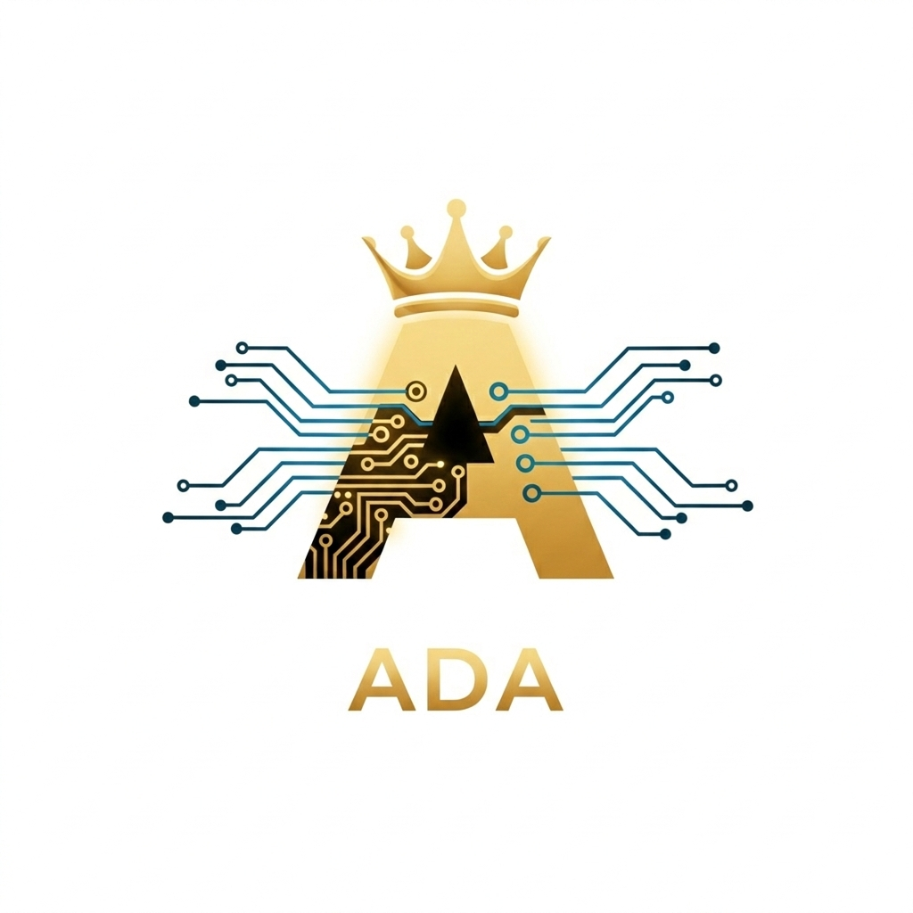
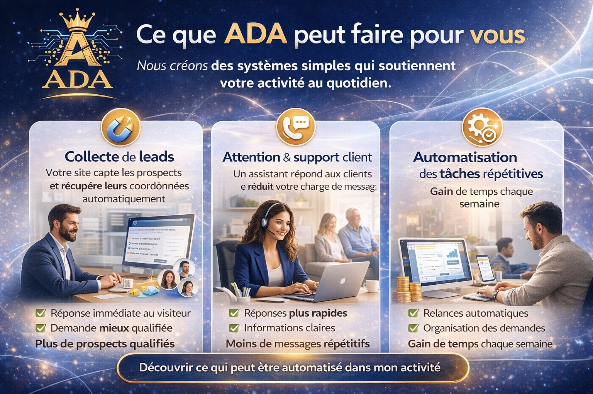

Nous aidons les entreprises de services à réduire la gestion manuelle, répondre plus vite aux prospects et automatiser certaines tâches répétitives — pour travailler plus sereinement et avancer plus efficacement.
Sans engagement • 2 minutes • Recommandation claire.
Beaucoup de professionnels travaillent dur, mais restent coincés dans la gestion du quotidien. ADA vous aide à remettre de l’ordre, à automatiser ce qui se répète et à avancer avec plus de sérénité.
Messages, confirmations, relances, suivi… cela prend une place énorme dans vos journées.
Quand vous êtes occupé, certaines demandes attendent — et parfois le prospect part ailleurs.
Les mêmes questions, les mêmes relances, les mêmes petites actions qui reviennent sans cesse.
L’objectif n’est pas d’ajouter un outil de plus. L’objectif est de mettre en place un système utile qui vous aide à mieux gérer les demandes et à ne plus laisser passer les opportunités.
Vos prospects reçoivent une première réponse plus rapidement, même quand vous êtes déjà pris par votre activité.
Chaque visiteur peut être guidé, compris et transformé en contact plus concret et mieux qualifié.
Moins d’oublis, moins de dispersion, moins de tâches répétitives : plus de temps pour votre vraie activité.
ADA conçoit des systèmes automatiques pensés pour les entreprises de services qui veulent mieux gérer leurs demandes, gagner du temps et travailler plus sereinement.
Votre site peut accueillir les visiteurs, poser quelques questions utiles et récupérer automatiquement leurs coordonnées.
Un assistant peut répondre aux questions fréquentes, orienter le client et réduire la charge de messages répétitifs.
Certaines actions peuvent être automatisées pour vous faire gagner du temps chaque semaine.
Le visiteur est guidé simplement, ses besoins sont clarifiés, ses coordonnées sont récupérées et vous recevez une demande plus claire et plus facile à traiter.

Nous partons de votre réalité, pas d’un modèle standard. Le but est simple : alléger la gestion, mieux traiter les demandes et mettre en place un système utile pour votre activité.
Vous recevez une recommandation claire sur ce qui peut être automatisé en priorité pour mieux répondre, mieux organiser vos demandes et avancer plus sereinement.
Vous pouvez laisser autant d’informations que vous voulez — le minimum suffit.
Nous aidons les entreprises de services à gagner du temps, mieux gérer leurs demandes et éviter de perdre des opportunités.
Si vous voulez comprendre ce qui pourrait être automatisé dans votre activité, envoyez simplement un message sur WhatsApp. Nous vous poserons quelques questions rapides pour vous donner une première recommandation.
Vous serez redirigé vers WhatsApp pour commencer l’échange avec ADA.